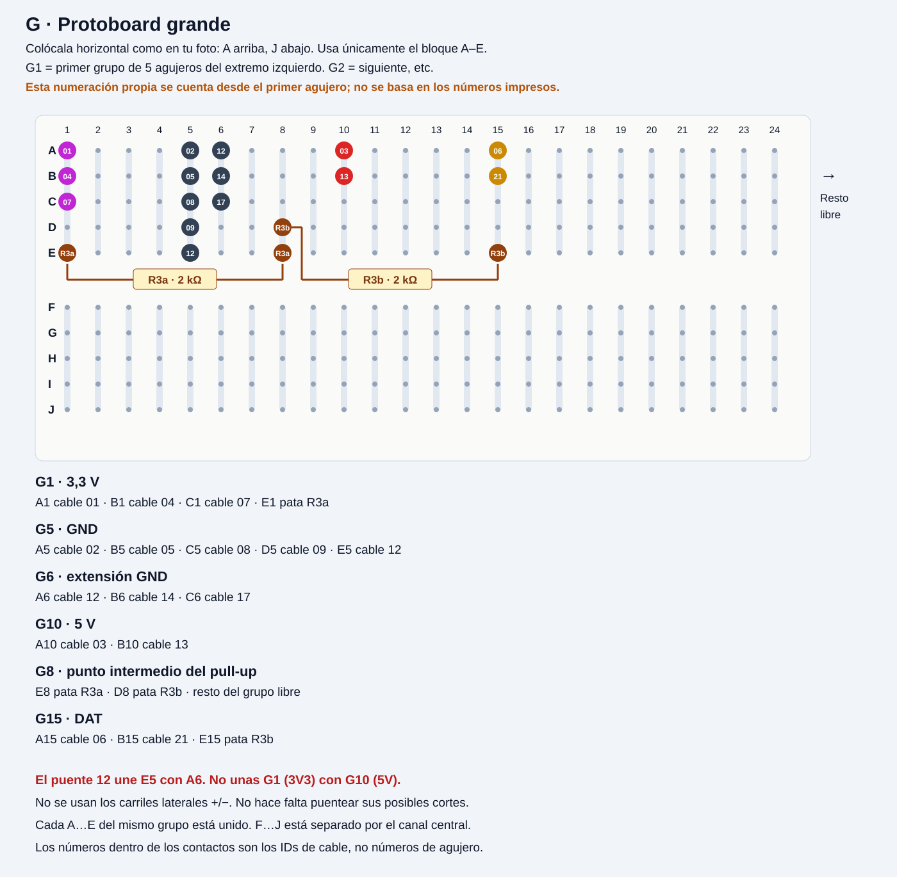
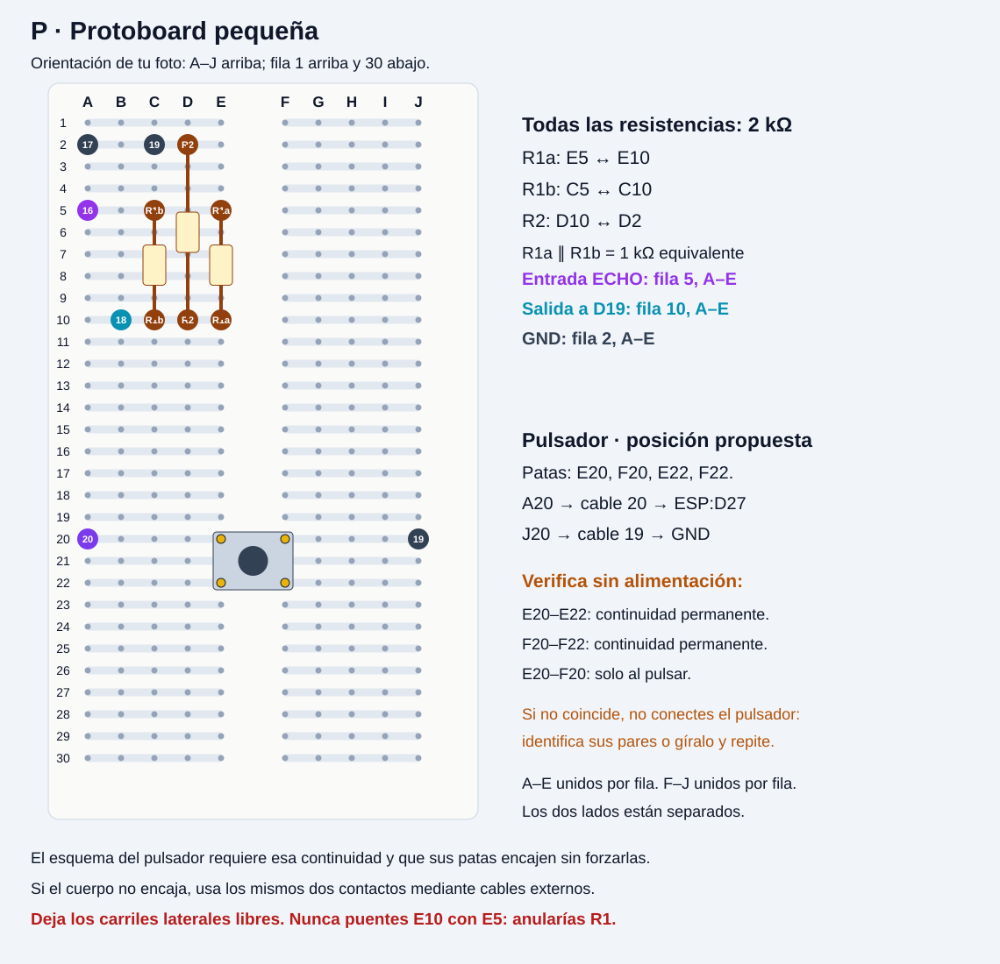

Montaje real: cada cable y cada contacto
ESP32 · TZT DS18x20 · MPU-6050 · HC-SR04 · pulsador. Preparado con tus fotografías y los GPIO del firmware probado.
Instrucciones completas y comprobaciones · Lista de 21 cables · Fotos originales
2. Protoboard grande
Numeración propia: G1 es el primer grupo de agujeros del extremo izquierdo; G2 el siguiente. Cuenta agujeros desde el borde, no uses el número impreso como sustituto. Solo usamos A–E. No se usan los carriles +/−.

3. Protoboard pequeña
Usa sus coordenadas impresas A–J y 1–30. Confirma los contactos del pulsador antes de colocarlo. Si las patas no encajan, usa cables hacia los mismos dos nodos.

4. Lista de montaje
Marca cada cable al colocarlo. Las marcas se conservan en este navegador.
Cinco resistencias, todas de 2 kΩ
| Pieza | Valor | Primera pata | Segunda pata |
|---|
| R1a | 2 kΩ | P:E5 | P:E10 |
| R1b | 2 kΩ | P:C5 | P:C10 |
| R2 | 2 kΩ | P:D10 | P:D2 |
| R3a | 2 kΩ | G:E1 | G:E8 |
| R3b | 2 kΩ | G:D8 | G:E15 |
R1a y R1b en paralelo equivalen a 1 kΩ. R3a y R3b en serie equivalen a 4 kΩ. R2 se mantiene. Si confirmas un pull-up interno de 4,7 kΩ entre DAT y VCC del adaptador, puedes omitir R3a/R3b. Ver instrucciones, pulsador y primera alimentación.
5. Referencias del hardware real
Comprueba el montaje sin alimentación antes de conectar USB. Las comprobaciones físicas siguen pendientes.